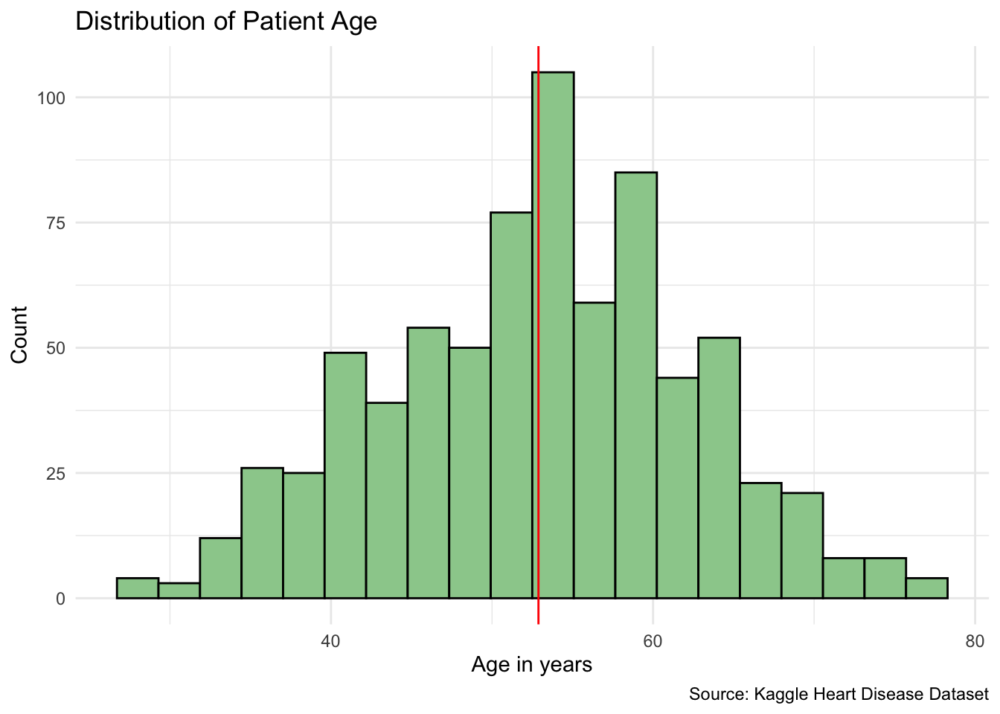
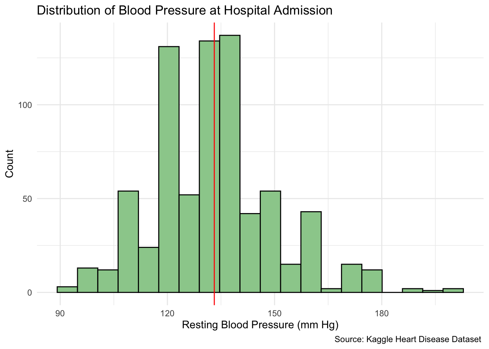
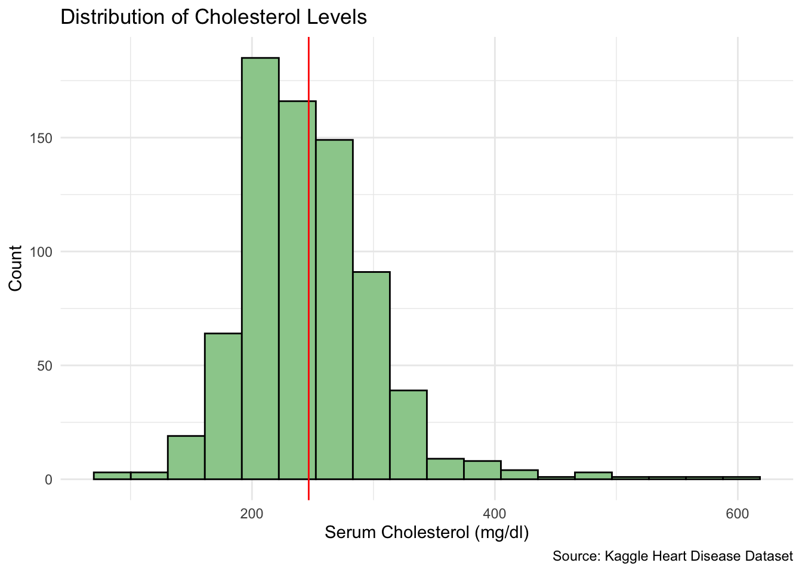
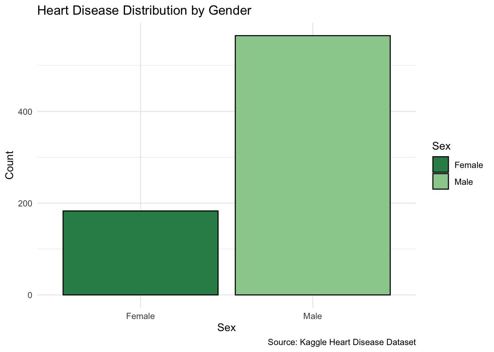
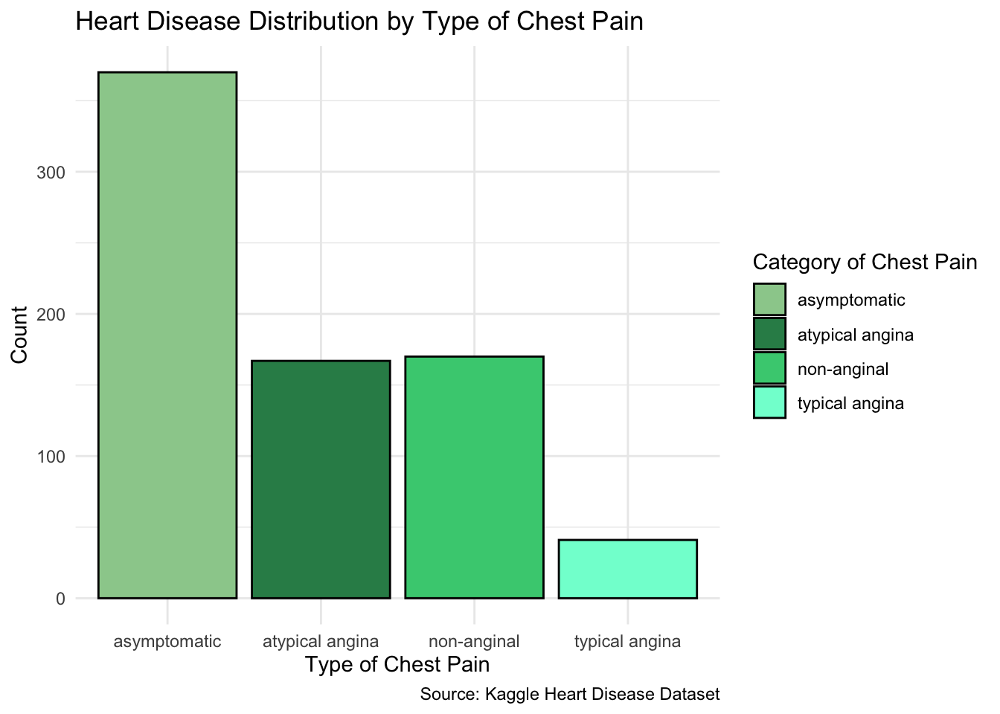
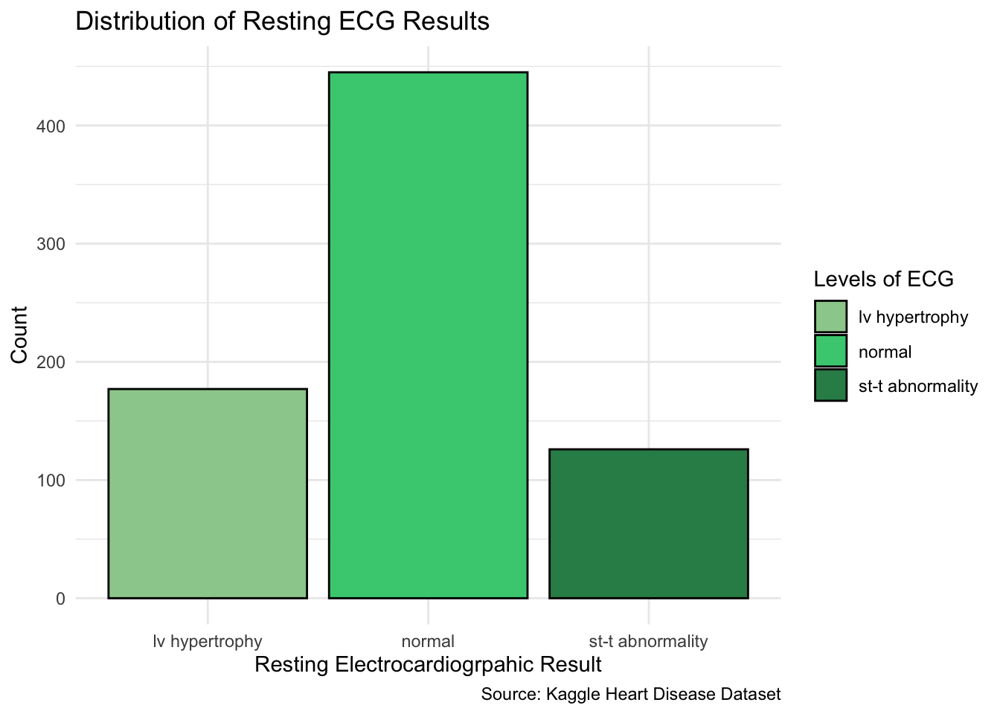
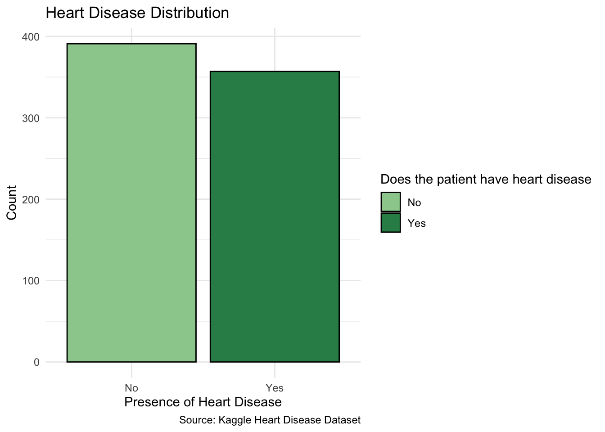
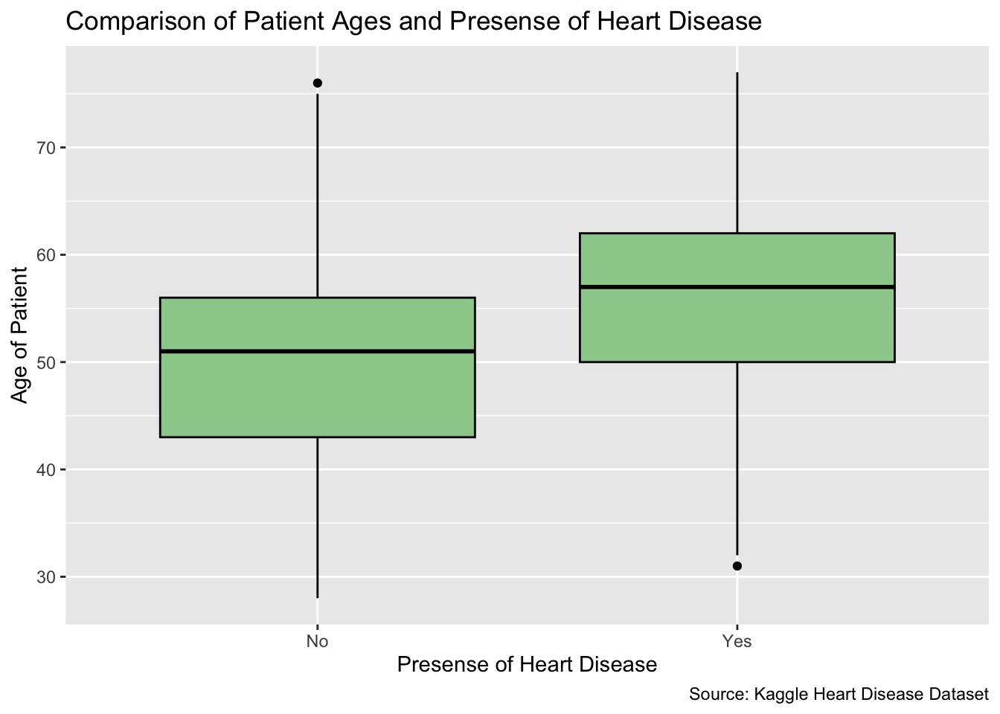
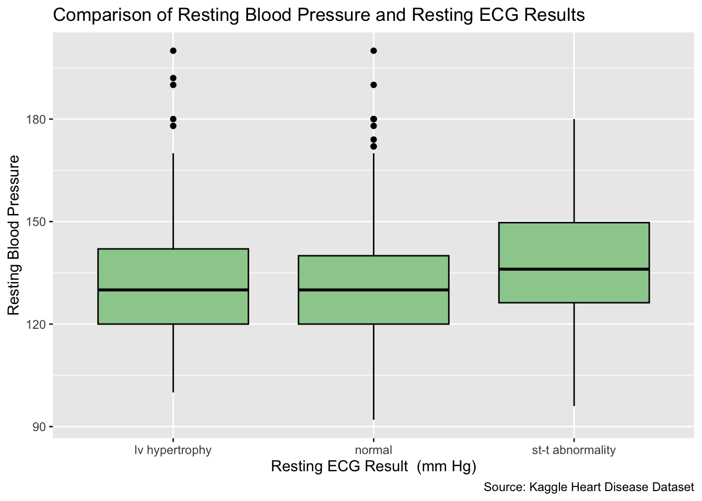

The data consists of medical information regarding patients being evaluated for heart disease. This dataset was retrieved from Kaggle, however, originally based on the Cleveland Heart Disease dataset. The data is compiled of clinical patients from the US, Hungary, and Switzerland. Collectively, 919 patient data observations were gathered, with each row is represented by a single patient ranging from 28 to 77 years old.
Broader Significance
Cardiovascular disease (CVD) is a leading cause of mortality within the United States. Early identification of risk factors is crucial in prevention of CVD. The variables selected to be examined in this analysis are representative of some of the most studied predictors of cardiovascular diseases. This exploratory data analysis becomes especially valuable when looking at the interaction of multiple factors to determine an individuals overall risk profile.
It is particularly relevant in recent ongoing discussions regarding the effectiveness of routine screening tools such as ECGs. For example, a recent 2024 study conducted by JAMA Internal Medicine analyzing working age adults in Japan, highlights the potentials and limitations surrounding ECG based screenings. In this context, the present analysis contributes to a larger conversation of how can certain variables be used to better understand complex diseases.
Variables
Here is the breakdown of the variables being focused on:
Variable Name
Description
Type
Age
Age of Patient (Years)
Continuous
Cholesterol
Serum Cholesterol (mg/dl)
Continuous
Resting_Blood_Pressure
Resting Blood Pressure (mm Hg)
Continuous
Sex
Gender of patient (Male or Female)
Categorical
Chest_Pain_Type
The various types of chest pain experienced by patients (typical angina, atypical angina, non-anginal, asymptomatic)
Categorical
Heart_Disease
Presence of heart disease (Yes or No)
Categorical
Resting_ECG
Results of resting electrocardiographic result (normal, ST-T abnormality, left ventricular hypertrophy)
Categorical
Data Cleaning
The original dataset contained 16 various medical variables determined to be relevant to heart disease. For this analysis, I selected a small subset of these to maintain the focus of the scope. I renamed some variables for clarity such as cp to Chest_Pain_Type, chol to Cholesterol, restecg to Resting_ECG, trestbps to Resting_Blood_Pressure, num to Heart_Disease, and the remaining variables to adjust capitalization for consistency.
Additionally, although the data set was mainly pre-cleaned, there were 171 rows of missing values denoted by 0.00, within the “Cholesterol” column, which I filtered out. Having a cholesterol result of 0.00 is physiologically impossible, therefore I recognized and treated it as a placeholder for an unknown value. Removing these rows improves the validity of the analysis by preventing unrealistic values from distorting the results. However, this decision may also introduce bias, as the excluded observations are not distributed across all patients and may impact the representation of the sample. After filtering out these rows, there were 748 observations of patient data that remained which I conducted my analysis on.
Moreover, the target variable Heart_Disease indicates the absence or presence of heart disease. Originally, it was listed on a 0-4 scale representing a scale of the severity. Ultimately, I decided to change this column to be representative in a binary categorical manner denoted by a “yes” or “no”. This simplification makes the analysis more straightforward, though it reduces variation in disease progression.
Continuous Variables
This histogram represents the age distribution across patients.
Code
source ("Heart_Disease_Data.R") Histogram_Age <-ggplot(cleaned_heart_disease_dataset) +aes(x = Age) +geom_histogram(bins =20, fill ="darkseagreen3", color ="black") +labs(x ="Age in years", y ="Count", title ="Distribution of Patient Age", caption ="Source: Kaggle Heart Disease Dataset" ) +geom_vline(xintercept =mean(cleaned_heart_disease_dataset$Age), color ="red") +theme_minimal()
Code
Histogram_Age

The age distribution appears roughly symmetrical and uni-modal. The average patient is roughly 53 years old, which indicates the data set is mainly centered around middle aged patients. Based on the 1.5 x IQR rule, there are no extreme outliers falling within the bounds of 26.5 and 78.5 years old.
The focus around age 53 likely suggests sample selection over a true population wide age distribution. Individuals in this age range are at a higher risk for heart related conditions, making them more likely to go through cardiac testing and evaluations compared to a younger patient. This explains the centrality and representation in this clinical heart disease dataset.
This histogram represents the distribution of the resting blood pressure of patients as they were admitted into the hospital.
Code
Histogram_RestingBP <-ggplot(cleaned_heart_disease_dataset) +aes(x = Resting_Blood_Pressure) +geom_histogram(bins =20, fill ="darkseagreen3", color ="black") +labs(x ="Resting Blood Pressure (mm Hg)", y ="Count", title ="Distribution of Blood Pressure at Hospital Admission", caption ="Source: Kaggle Heart Disease Dataset " ) +geom_vline(xintercept =mean(cleaned_heart_disease_dataset$Resting_Blood_Pressure), color ="red")+theme_minimal()
Code
Histogram_RestingBP

The distribution of resting blood pressure is uni-modal and has a slight right skew. As visually seen in the plot, the majority of patients lie between the interquartile range (IQR) bounds of 120 mm Hg to 140.7 mm Hg. This right skew towards high blood pressure is shows a selection of patients with comparatively elevated blood pressure results, which are notably associated with increased cardiovascular risks.
Additionally, potential outliers are denoted according to the 1.5 x IQR rule, with values below 88.2 mm Hg and above 173.0 mm Hg. These values are most likely real observation rather than errors as high values can reflect hypertension and low values can reflect hypotension. Additionally, wthin this data set specifically, we are examining individuals being tested for heart disease, indicating that the presense of extreme values are not unexpected. In all, the presence of higher blood pressure values corroborates that resting blood pressure can serve as a predictive variable for an increased risk of heart disease.
This histogram represents the distribution of cholesterol levels within the dataset.
Code
Histogram_Cholesterol <-ggplot(cleaned_heart_disease_dataset) +aes(x = Cholesterol) +geom_histogram(bins =18, fill ="darkseagreen3", color ="black") +labs(x ="Serum Cholesterol (mg/dl)", y ="Count", title ="Distribution of Cholesterol Levels", caption ="Source: Kaggle Heart Disease Dataset" ) +geom_vline(xintercept =mean(cleaned_heart_disease_dataset$Cholesterol), color ="red")+theme_minimal()
Code
Histogram_Cholesterol

The cholesterol distribution is uni-modal, with a right skew. The mean of cholesterol levels lies at 201 mg/dl. Essentially, most patients have moderate levels of cholesterol while a small selection of patients have much higher levels which pulls the mean upwards, skewing it towards the right.
Additionally, according to the 1.5 x IQR rule, patients with cholesterol levels below 113.5 mg/dl and above 373.5 mg/dl are outliers. These outlying values are likely true test results rather than errors. Givent the medical context of this data, the presence of these high cholesterol values is significant as they may indicate a greater risk of heart disease in patients, further establishing relevance of the data’s skew.
Categorical Variables
This bar chart represents the comparison of genders within the dataset.
Code
Barchart_Sex <-ggplot(cleaned_heart_disease_dataset, aes(x = Sex, fill = Sex)) +geom_bar(color ="black") +scale_fill_manual(values =c("Male"="darkseagreen3", "Female"="seagreen4"))+labs(x ="Sex", y ="Count", title ="Heart Disease Distribution by Gender", caption ="Source: Kaggle Heart Disease Dataset" ) +theme_minimal()
Code
Barchart_Sex

The vast majority of patients tested for heart disease are male. Per PubMed, heart related diseases are 8.3% more prevalent within men than women. This trend suggests an explanation to the higher proportion of males in this selection of patients in this research.
The higher population of male patients may also reflect sampling bias not related to who received testing and is in the dataset. Since this data set only includes individuals who had cardiac evaluations, it represents a selected clinical sample rather than a comprehensive population distribution. Therefore, any sex-based conclusions should be interpreted cautiously since the observed patterns may be influenced by factors such as biological differences or the sampling process used to collect the data.
This bar chart represents the distribution of types of chest pain reported by patients.
Code
Barchart_Chest_Pain_Type <-ggplot(cleaned_heart_disease_dataset, aes(x = Chest_Pain_Type, fill = Chest_Pain_Type)) +geom_bar(color ="black") +scale_fill_manual(values =c("asymptomatic"="darkseagreen3", "atypical angina"="seagreen4", "non-anginal"="seagreen3", "typical angina"="aquamarine"))+labs(x ="Type of Chest Pain", y ="Count", title ="Heart Disease Distribution by Type of Chest Pain", caption ="Source: Kaggle Heart Disease Dataset" ) +guides(fill =guide_legend(title ='Category of Chest Pain'))+theme_minimal()
Code
Barchart_Chest_Pain_Type

There is an overwhelming majority of patients who reported experiencing asymptomatic chest pains. Atypical angina and non-aginal pains occurred in equal amounts, and the least experienced is typical angina. This spread is somewhat expected in chest pain tests, as a notable amount of patients do not present typical symptoms. According to Harvard Health, 45% of all heart attacks and considered silent heart attacks, exhibiting less severe or brief symptoms.
The pattern reinforces a significant limitation of symptom based assessments, chest pain alone is insufficient for accurately detecting cardiovascular related diseases. Diagnosis requires numerous additional variables beyond self reported mild, atypical and absent pain types.
This bar chart represents the various resting patient levels of the Electrocardiographic test.
Code
Barchart_ECG <-ggplot(cleaned_heart_disease_dataset, aes(x = Resting_ECG, fill = Resting_ECG)) +geom_bar(color ="black") +scale_fill_manual(values =c("lv hypertrophy"="darkseagreen3", "st-t abnormality"="seagreen4", "normal"="seagreen3"))+labs(x ="Resting Electrocardiogrpahic Result", y ="Count", title ="Distribution of Resting ECG Results", caption ="Source: Kaggle Heart Disease Dataset" ) +guides(fill =guide_legend(title ='Levels of ECG'))+theme_minimal()
Code
Barchart_ECG

This data shows a vast majority of normal ECG results at the time the patient was admitted to the hospital. This indicates that a normal ECG reading may not always indicate the absence of heart diseases, emphasizing the significance to consider several variables.
This bar chart represents the amount of patients who have a heart disease.
Code
Barchart_Heart_Disease <-ggplot(cleaned_heart_disease_dataset, aes(x = Heart_Disease, fill = Heart_Disease)) +geom_bar(color ="black") +scale_fill_manual(values =c("No"="darkseagreen3", "Yes"="seagreen4"))+labs(x ="Presence of Heart Disease", y ="Count", title ="Heart Disease Distribution", caption ="Source: Kaggle Heart Disease Dataset" ) +guides(fill =guide_legend(title ='Does the patient have heart disease'))+theme_minimal()
Code
Barchart_Heart_Disease

This data set shows a nearly balanced distribution between patients who have and do not have a heart disease. This is allows for a more balanced analysis of groups which is more likely to create clear interpretations of how variables correlate with heart disease over an imbalanced dataset.
Comparing Variables
This box plot is a comparison of the age of patients with and without heart disease to draw emphasis on the differences within the groupings.
Code
Boxplot_Age_by_Heart_Disease <-ggplot(cleaned_heart_disease_dataset, aes(x = Heart_Disease, y = Age)) +geom_boxplot(fill ="darkseagreen3", color ="black") +labs(x ="Presense of Heart Disease", y ="Age of Patient", title ="Comparison of Patient Ages and Presense of Heart Disease", caption ="Source: Kaggle Heart Disease Dataset")
Code
Boxplot_Age_by_Heart_Disease

From this box plot, we can see a positive association between patients with heart disease and age. One way this is indicated is by the higher median within the “Yes” category than the “No” category. This pattern aligns with the understanding that the risk for cardiovascular disease increases over time. Additionally, we can see one outlier higher in the “No” category and lower in the “Yes” category, however, this does not affect the trend drastically.
This box plot represents the comparison of resting blood pressure and resting ECG results at the time of patients admitted into the hospital.
Code
Boxplot_Blood_Pressure_by_ECG <-ggplot(cleaned_heart_disease_dataset, aes(x = Resting_ECG, y = Resting_Blood_Pressure)) +geom_boxplot(fill ="darkseagreen3", color ="black") +labs(x ="Resting ECG Result (mm Hg)", y ="Resting Blood Pressure",title ="Comparison of Resting Blood Pressure and Resting ECG Results", caption ="Source: Kaggle Heart Disease Dataset")
Code
Boxplot_Blood_Pressure_by_ECG

The most notable difference in medians across the groups is higher with patients who have st-t abnormality. These patients tended to have a higher typical resting blood pressure result as well. Additionally, the blood pressure results among these patients are the most spread of the groups, meaning they have more variability. Moreover, patients testing normal or lv hypertropy, have several outliers with very high resting blood pressure results.
Predictors and Limitations
In this analysis, age, cholesterol, and resting blood pressure appear to be very influential variables associated with heart disease. Cumulatively from this data set, these finding suggest that heart disease risk is multifactorial, meaning we cannot rely on understanding through a single variable. Rather, it is a combination of several indicators in the overall findings that allow for a more holistically understanding and prediction of risk.
Simultaneously, the analysis appears to have some limitations. The 171 rows of missing data regarding cholesterol placeholders may affect representation. Additionally, the simplification of heart disease into a binary sample size removes important variation, which can obscure some dynamics. Finally, the sample size and clinical selection of patients limits the generalizability to broader populations. Despite these limitations, the analysis offers foundational insight into indicators of cardiovascular risk and emphasizes a multivariable approach in early detection.